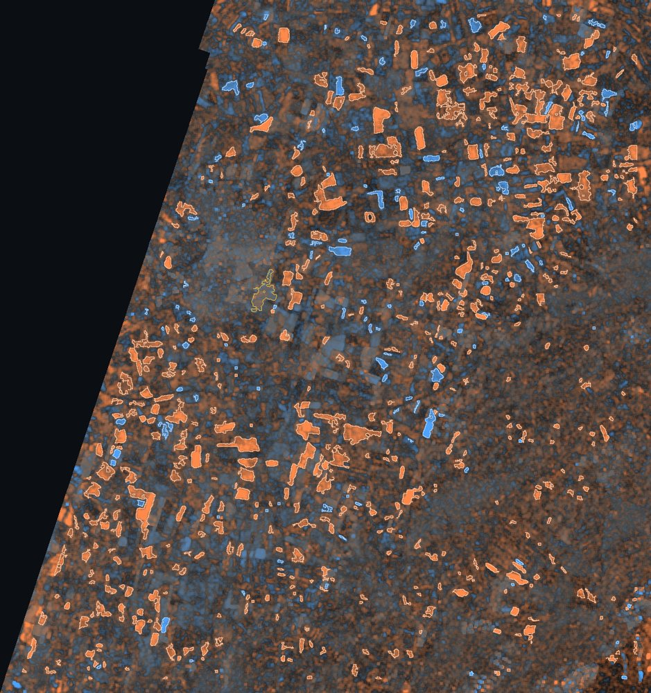

NASA Space Apps 2026 · Çukurova için
Uzaydan bakınca: Ceyhan tarlalarında 12 günde ne değişti?
NASA ve ISRO'nun ortak radar uydusu NISAR, Ceyhan çevresini 22 Ekim ve 3 Kasım 2026'da aynı yörüngeden görüntüledi. Radar bulut ve karanlıktan etkilenmez. Bu sayfa, ölçtüklerimizi ve bunun Çukurova çiftçisi için ne anlama gelebileceğini sade bir dille anlatıyor.

636 tarla parselinde belirgin değişim var. Parlaklaşan alan (3.282 ha), kararan alanın (468 ha) yaklaşık 7 katı.
Değişmemesi gereken Ceyhan şehir merkezi neredeyse hiç değişmedi. Yani gördüğümüz değişim uydu hatası değil, tarlalarda.
NASA'nın optik uydu verisine (HLS) göre parlaklaşan parsellerin yalnızca %9'unda bitki örtüsü azaldı. Değişimin çoğu hasat değil.
28–29 Ekim'de yaklaşık 23 mm yağmur yağdı. NASA'nın toprak nemi uydusu SMAP, Ceyhan'da toprağın belirgin şekilde ıslandığını ölçtü (m³/m³). En güçlü açıklama: toprak ıslandı.
Sadece Ceyhan'da mı? Dünya genelinde test ettik
Testi önceden yazıp kilitledik, sonra dünyanın her yerinden 200 NISAR bölgesini rastgele seçtik. SMAP'in güvenilir ölçüm verdiği 74 bölgede sonuç açık: toprak ıslandıkça radar parladı, kurudukça karardı (Spearman ρ = 0,58, p < 0,001). Yani Ceyhan'da gördüğümüz, NISAR'ın dünyanın her yerinde gösterdiği bir fizik yasasının yerel hâli.
Sırada ne var? 15 Kasım geçişi kararı verecek
NISAR 15 Kasım'da Ceyhan'ın üzerinden yeniden geçecek. SMAP, toprağın 11 Kasım'a kadar yeniden kuruduğunu gösteriyor. İki ihtimal var:
- Parlaklaşma ıslak topraktan geldiyse, tarlalar yeniden kararmalı.
- Sürümden (toprağın pürüzlenmesinden) geldiyse, tarlalar parlak kalmalı — pürüz kurumaz.
Tahminimizi ve karar kurallarımızı uydu geçmeden önce herkese açık olarak kilitledik. Veri yayımlanınca sonuç uygulamada görünecek.
Çiftçi ve ziraat teknisyenleri için ne anlama gelir?
- Bulutlu havada da görür: Radar, Çukurova'nın kış aylarında bile her 12 günde bir tarlaların ıslanıp kuruduğunu izleyebilir.
- Kendi bölgenize bakın: Uygulamada "Change census" tablosundaki Nearest place sütununda köyünüzün adını arayın, ya da haritada Draw region ile tarlanızı çizip ölçün.
- Saha kontrolü için başlangıç noktası: Belirgin parlayan veya kararan parseller, yerinde bakılması gereken yerleri gösterebilir (su tutma, sürüm, hasat).
- Gelecekte: Ardışık NISAR geçişleriyle hangi tarlaların ne kadar hızlı kuruduğunu karşılaştırmak, sulama ve drenaj planlamasına yardımcı olabilir. Bu henüz test edilmiş bir uygulama değildir.
Neyi iddia etmiyoruz
- Tek bir tarlanın neden değiştiğini kesin olarak bilemeyiz; SMAP 9 km genişliğinde ölçer, tek tek tarlaları ayırmaz.
- Bu bir vaka çalışmasıdır, uyarı sistemi değildir. Yağış değerleri kaba bir model tahminidir.
- Ceyhan'ın toprak nemi karşılaştırması "keşif amaçlı"dır (22 Ekim'e en yakın güvenilir SMAP ölçümü 20 Ekim'dir).
Veriler: NASA-ISRO NISAR L2 GCOV VALIDATED · NASA SMAP · NASA HLS · NASA POWER · © OpenStreetMap katkıcıları. Resmî bir NASA veya ISRO ürünü değildir. Yazılım geliştirme ve metinlerde üretken yapay zekâ (Claude Code) desteği kullanılmıştır; tüm sayılar NASA verilerinden hesaplanmış ve testlerle doğrulanmıştır.